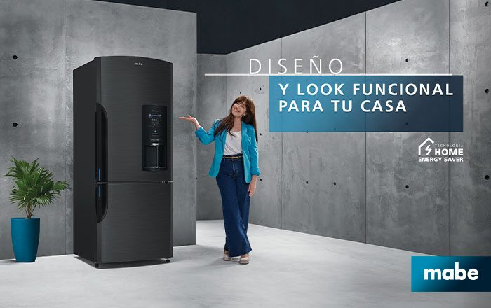

El clima tropical de Cartagena requiere un cuidado especial para su nevera Mabe. Nuestro servicio técnico Mabe en Cartagena ofrece mantenimiento preventivo para prevenir fallas costosas en su tecnología sistemas No Frost y control de humedad.

El corazón de las neveras Mabe es su sistema No Frost. Si nota acumulación de hielo, el ducto de aire puede estar obstruido y conviene revisar el bimetálico y la resistencia.
En Cartagena, el polvo y la salinidad son enemigos del condensador. Limpiarlo regularmente previene el sobrecalentamiento del compresor.
Si su nevecón Mabe tiene dispensador de agua, cambie el filtro con regularidad. Los filtros sucios pueden taponar las líneas y causar fugas.
El mantenimiento preventivo suele verse como un gasto evitable, hasta que llega la primera reparación grande. En Cartagena, donde la humedad relativa supera el 80% gran parte del año y el aire cerca de la costa transporta sal en suspensión, esa lógica se invierte rápido: una nevera Mabe sin mantenimiento envejece funcionalmente mucho más rápido que la misma nevera en un clima seco y templado.
Para su equipo Mabe con tecnología sistemas No Frost y control de humedad, estos son los puntos que revisamos —y que usted también puede vigilar entre visitas—: Monitoreo del sistema No Frost: El corazón de las neveras Mabe es su sistema No Frost. Si nota acumulación de hielo, el ducto de aire puede estar obstruido y conviene revisar el bimetálico y la resistencia. Limpieza de bobinas por polvo y salinidad: En Cartagena, el polvo y la salinidad son enemigos del condensador. Limpiarlo regularmente previene el sobrecalentamiento del compresor. Cambio oportuno del filtro de agua: Si su nevecón Mabe tiene dispensador de agua, cambie el filtro con regularidad. Los filtros sucios pueden taponar las líneas y causar fugas.
Un error común es esperar a que la nevera falle por completo para llamar a un técnico. Para cuando eso ocurre, el compresor o la tarjeta electrónica ya absorbieron meses de sobreesfuerzo, y lo que pudo ser una limpieza de $0 o un ajuste menor termina siendo el cambio de una pieza costosa. El mantenimiento preventivo cuesta una fracción de una reparación mayor y extiende la vida útil del equipo varios años.
Si vive en zonas cercanas al mar como Bocagrande, El Laguito o Castillogrande, recomendamos acortar el intervalo de limpieza del condensador a cada 4-5 meses en lugar de 6, por la mayor concentración de sal en el aire. Puede revisar el detalle de nuestra cobertura en la sección de zonas atendidas del sitio.

Debido a la humedad y salinidad del ambiente costero, recomendamos un mantenimiento preventivo completo cada 10 a 12 meses, y limpieza del condensador cada 6 meses para su nevera Mabe. En zonas cercanas al mar como Bocagrande, Castillogrande o El Laguito, la brisa marina acelera la corrosión de piezas metálicas, por lo que conviene acortar este intervalo. Un mantenimiento a tiempo evita que una falla menor en la tecnología sistemas No Frost y control de humedad termine dañando el compresor y obligando a una reparación mucho más costosa.
Protege tu inversión con mantenimiento preventivo. Te confirmamos por WhatsApp en minutos.
☏ Escríbenos por WhatsApp